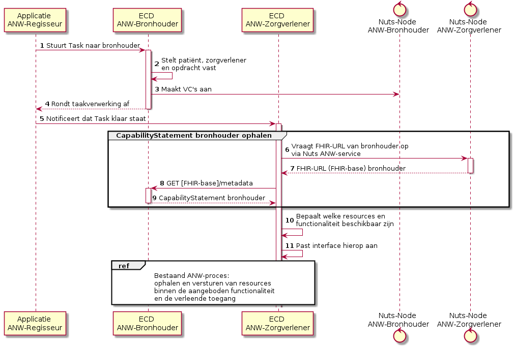

Netherlands - ANW implementation guide
0.1.0 - ci-build

Netherlands - ANW implementation guide
0.1.0 - ci-build

Netherlands - ANW implementation guide - Local Development build (v0.1.0) built by the FHIR (HL7® FHIR® Standard) Build Tools. See the Directory of published versions
Binnen ANW gebruiken we het CapabilityStatement van de FHIR-server als menukaart. Iedere deelnemer beschrijft hierin welke gegevens en functionaliteiten hij ondersteunt. Bronhouder en zorgverlener vergelijken hun CapabilityStatements om per taak vast te stellen welke functionaliteit zij gezamenlijk kunnen gebruiken.
Hiermee kunnen leveranciers onafhankelijk doorontwikkelen. Nieuwe optionele functionaliteit kan worden gebruikt zodra beide partijen deze ondersteunen, zonder dat alle leveranciers tegelijkertijd een volledige nieuwe versie hoeven te implementeren.
De oplossing gebruikt het standaard metadata-endpoint (CapabilityStatement) van de FHIR-server om de ondersteuning van iedere deelnemer te beschrijven.
De meeste leveranciers bieden momenteel een CapabilityStatement aan dat alle resources beschrijft die hun FHIR-server ondersteunt. Voor ANW moet duidelijk zijn welke ondersteuning specifiek binnen deze usecase beschikbaar is. Iedere leverancier is daarom verantwoordelijk voor een correct en actueel CapabilityStatement voor de betreffende usecase. Dit beschrijft uitsluitend de resources, profielen en handelingen die daar daadwerkelijk worden ondersteund en aangeboden.
Deze richting wordt ook binnen andere usecases besproken, bijvoorbeeld bij 360-graden het CapabilityStatement gebruiken om vast te stellen welke resources een aanbieder beschikbaar heeft. Het mechanisme kan worden hergebruikt, terwijl iedere usecase zijn eigen inhoudelijke afspraken behoudt.
Binnen de Nuts ANW-service wordt het FHIR-endpoint gepubliceerd. Dit verwijst naar de FHIR-base die de ANW-ondersteuning aanbiedt. Het bijbehorende CapabilityStatement wordt opgevraagd via het standaard metadata-endpoint:
GET [FHIR-base]/metadata
Dezelfde base wordt gebruikt voor de daadwerkelijke gegevensuitwisseling. Een aparte capability-API of afwijkend metadata-endpoint is niet nodig.
Afhankelijk van de inrichting kan een leverancier hiervoor een andere FHIR-base gebruiken. De FHIR-base kan dan bijvoorbeeld veranderen van:
GET [server-url]/fhir
naar:
GET [server-url]/fhir/anw
Dit is uitsluitend een mogelijke implementatiekeuze van de leverancier en geen voorgeschreven ANW-inrichting. De afspraak is dat het FHIR-endpoint binnen de Nuts ANW-service naar de juiste base verwijst en dat het standaard /metadata-endpoint een correct CapabilityStatement voor ANW aanbiedt. Of daarvoor een URL-wijziging nodig is en hoe dit wordt gerealiseerd, bepaalt de leverancier zelf.
Het CapabilityStatement beschrijft de ondersteunde volledige ZIB’s en aanvullende functies, met de bijbehorende profielen, handelingen en zoekmogelijkheden. De inhoud van de ZIB’s blijft leidend. Een minimale gezamenlijke ANW-basis blijft verplicht om het bestaande zorgproces uit te voeren. Aanvullende functies, zoals tijdregistratie, kunnen afzonderlijk worden ondersteund.
In STU3 worden ondersteunde profielen opgenomen in CapabilityStatement.profile. Resource-types, interacties en zoekparameters worden beschreven onder CapabilityStatement.rest.
Ook de ondersteuning als afnemer moet expliciet worden beschreven. De serverinteracties van een zorgverlener bewijzen niet automatisch wat zijn applicatie kan ophalen, verwerken of versturen. STU3 kan server- en clientgedrag onderscheiden via rest.mode. FHIR STU3 CapabilityStatement
De ANW Implementation Guide legt vast hoe deelnemers hun ondersteuning declareren en vergelijken. Dit omvat ook de relatie tussen profielen, handelingen en code/categorie-combinaties. Waar standaardvelden onvoldoende zijn, worden gepubliceerde FHIR-extensions gebruikt. Het CapabilityStatement blijft beschikbaar via het standaard metadata-endpoint. FHIR-extensibility
Het proces verloopt als volgt:

De overlap wordt per ZIB of functie bepaald op basis van de FHIR-interactions in het CapabilityStatement. Een resource is alleen beschikbaar voor de interactions die beide partijen ondersteunen.
Een bronhouder kan bijvoorbeeld bloeddruk aanbieden via read, maar create voor bloeddruk niet ondersteunen. De zorgverlener kan bloeddruk dan ophalen, maar geen nieuwe bloeddrukmeting aanmaken bij de bronhouder.
Alleen ondersteuning van hetzelfde resource-type, zoals Observation, is onvoldoende. Ook de profielen moeten overeenkomen.
Het CapabilityStatement beschrijft systeemmogelijkheden. Het verleent zelf geen toegang en zegt niet of voor een patiënt gegevens aanwezig zijn. De NutsAuthorizationCredential bepaalt welke toegang voor de resource is verleend. De bronhouder controleert bij ieder verzoek of de handeling binnen die toegang valt.
Als een CapabilityStatement niet kan worden opgehaald, wordt geen nieuwe ondersteuning aangenomen. Wijzigingen in ondersteuning geven bestaande taken niet automatisch ruimere toegang. Waar nodig beoordeelt de bronhouder de overeenkomsten en autorisatie opnieuw.